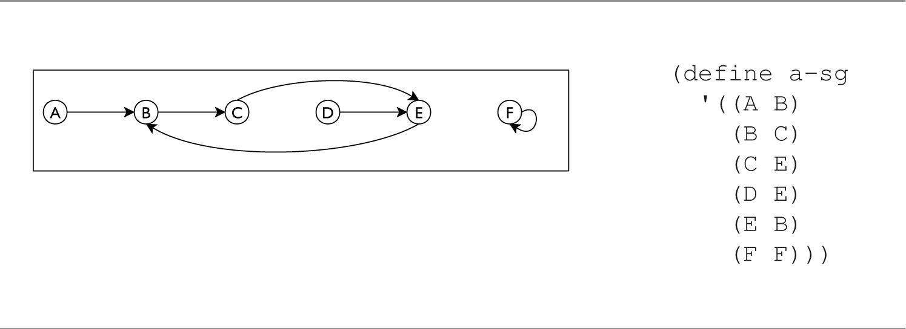
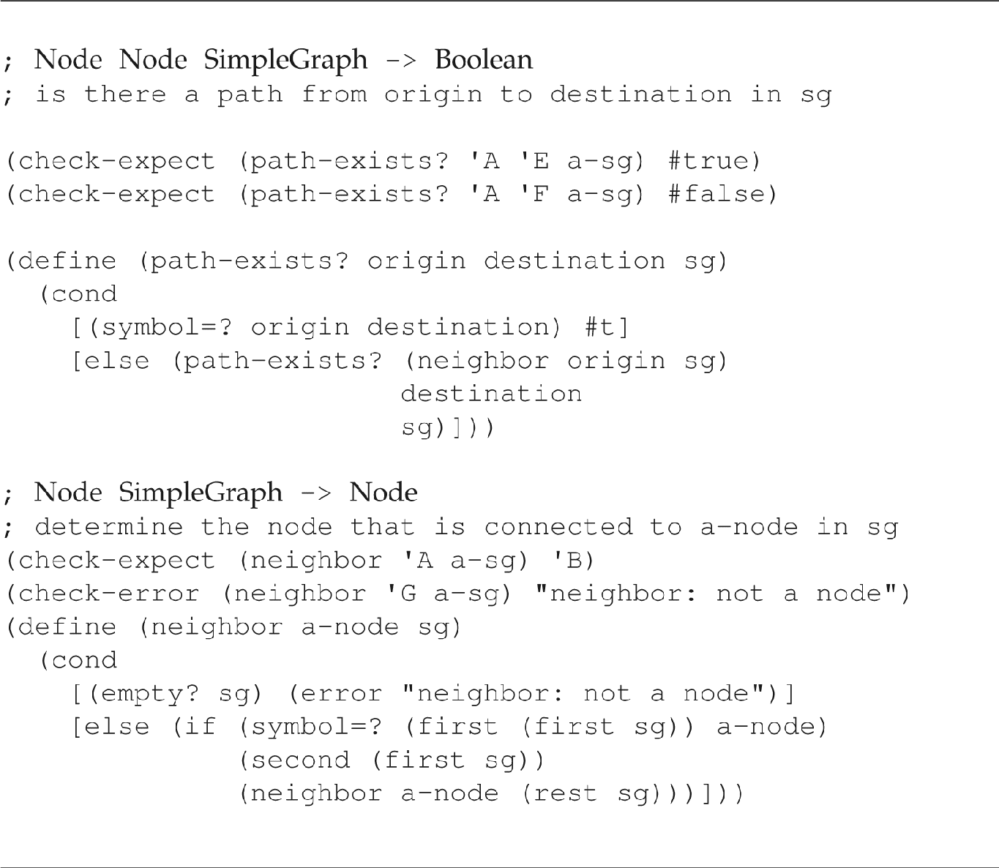
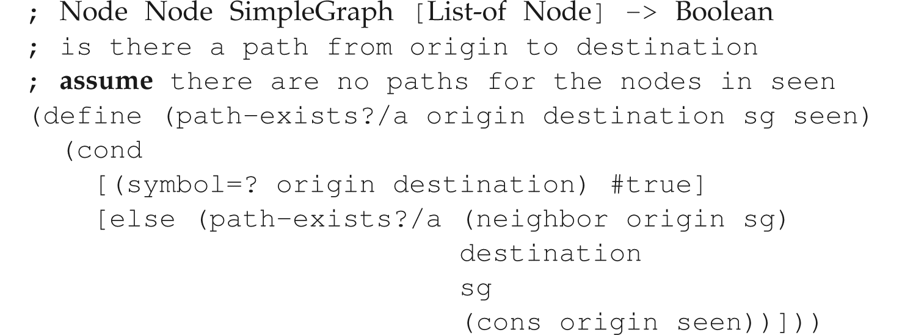
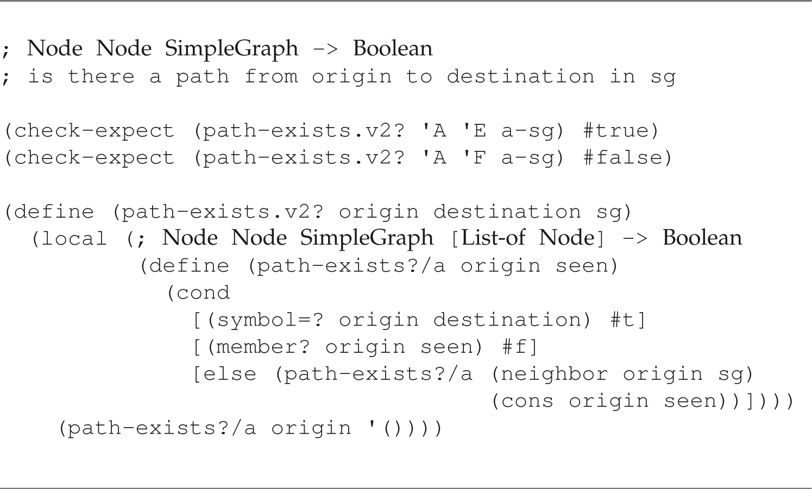

31.2 A Problem with Generative Recursion
Let’s revisit the problem of “traveling” along a path in a graph:
Sample Problem Design an algorithm that checks whether two nodes are connected in a simple graph. In such a graph, each node has exactly one, directional connection to another, and possibly itself.
Chapter 29 covers the variant where the algorithm has to discover the path. This sample problem is simpler than that because this section focuses on the design of an accumulator version of the algorithm.
Consider the sample graph in figure 179. There are six nodes, A through F, and six connections. A path from A to E must contain B and C. There is no path, though, from A to F or from any other node besides itself.

Figure 179: A simple graph
The right part of figure 179 shows how to represent this graph with nested lists. Each node is represented by a list of two symbols. The first symbol is the label of the node; the second one is the single node that is reachable from the first one. Here are the relevant data definitions:
; A SimpleGraph is a [List-of Connection]
; A Connection is a list of two items:
; (list Node Node)
; A Node is a Symbol.
They are straightforward translations of our informal descriptions.
We already know that the problem calls for generative recursion, and it is easy to create the header material:
; Node Node SimpleGraph -> Boolean
; is there a path from origin to destination
; in the simple graph sg
(check-expect (path-exists? 'A 'E a-sg) #true)
(check-expect (path-exists? 'A 'F a-sg) #false)
(define (path-exists? origin destination sg)
#false)
What we need are answers to the four basic questions of the recipe for generative recursion:
• The problem is trivial if origin is the same as destination.
• The trivial solution is #true.
• If origin is not the same as destination, there is only one thing we can do: step to the immediate neighbor and search for destination from there.
• There is no need to do anything if we find the solution to the new problem. If origin’s neighbor is connected to destination, then so is origin. Otherwise there is no connection.
From here we just need to express these answers in ISL+ to obtain a full-fledged program.
Figure 180 contains the complete program, including the function for finding the neighbor of a node in a simple graph—a straightforward exercise in structural recursion—and test cases for both possible outcomes. Don’t run the program, however. If you do, be ready with your mouse to stop the run-away program. Indeed, even a casual look at the function suggests that we have a problem. Although the function is supposed to produce #false if there is no path from origin to destination, the program doesn’t contain #false anywhere. Conversely, we need to ask what the function actually does when there is no path between two nodes.

Figure 180: Finding a path in a simple graph
Take another look at figure 179. In this simple graph there is no path from C to D. The connection that leaves C passes right by D and instead goes to E. So let’s look at a hand-evaluation:
(path-exists? 'C 'D '((A B) … (F F)))
== (path-exists? 'E 'D '((A B) … (F F)))
== (path-exists? 'B 'D '((A B) … (F F)))
== (path-exists? 'C 'D '((A B) … (F F)))
It confirms that as the function recurs, it calls itself with the exact same arguments again and again. In other words, the evaluation never stops.
Our problem with path-exists? is again a loss of “knowledge,” similar to that of relative->absolute above. Like relative->absolute, the design of path-exists? uses a recipe and assumes that recursive calls are independent of their context. In the case of path-exists? this means, in particular, that the function doesn’t “know” whether a previous application in the current chain of recursions received the exact same arguments.
The solution to this design problem follows the pattern of the preceding section. We add a parameter, which we call seen and which represents the accumulated list of starter nodes that the function has encountered, starting with the original application. Its initial value must be '(). As the function checks on a specific origin and moves to its neighbors, origin is added to seen.
Here is a first revision of path-exists?, dubbed path-exists?/a:

The addition of the new parameter alone does not solve our problem, but, as the hand-evaluation of
(path-exists?/a 'C 'D '((A B) … (F F)) '())
shows, it provides the foundation for one:
== (path-exists?/a 'E 'D '((A B) … (F F)) '(C))
== (path-exists?/a 'B 'D '((A B) … (F F)) '(E C))
== (path-exists?/a 'C 'D '((A B) … (F F)) '(B E C))
In contrast to the original function, the revised function no longer calls itself with the exact same arguments. While the three arguments proper are again the same for the third recursive application, the accumulator argument is different from that of the first application. Instead of '(), it is now '(B E C). The new value tells us that during the search of a path from 'C to 'D, the function has inspected 'B, 'E, and 'C as starting points.
All we need to do now is to make the algorithm exploit the accumulated knowledge. Specifically, the algorithm can determine whether the given origin is already an item in seen. If so, the problem is also trivially solvable, yielding #false as the solution. Figure 181 contains the definition of path-exists.v2?, which is the revision of path-exists?. The definition refers to member?, an ISL+ function.

Figure 181: Finding a path in a simple graph with an accumulator
The definition of path-exists.v2? also eliminates the two minor problems with the first revision. By localizing the definition of the accumulating function, we can ensure that the first call always uses '() as the initial value for seen. And, path-exists.v2? satisfies the exact same signature and purpose statement as the path-exists? function.
Still, there is a significant difference between path-exists.v2? and relative-to-absolute2. Whereas the latter was equivalent to the original function, path-exists.v2? improves on path-exists?. While the latter fails to find an answer for some inputs, path-exists.v2? finds a solution for any simple graph.
Exercise 492. Modify the definitions in figure 169 so that the program produces #false, even if it encounters the same origin twice.